# OpenClaw
OpenClaw 是一个开源的 AI 智能体网关，能让你在本地部署 AI 助手，并通过飞书、企微、QQ、Telegram 等多种平台随时使用它。它最吸引人的地方在于：数据留在本地、能访问你电脑上的文件、成本远低于订阅制 AI 服务。
# 准备、安装与初始化
详见：https://docs.openclaw.ai/start/getting-started
- Node.js 22.22.3+, 24.15+, or 25.9+ (Node 26 is the recommended runtime)
- An API key from a model provider (Anthropic, OpenAI, Google, etc.) — onboarding will prompt you
一般为：
在终端中执行以下命令进行全局安装：
安装完成后，验证是否成功：
openclaw --version
更推荐使用 CC Switch 官方网站 - AI 编程工具统一管理平台来进行安装，此外 CC Switch 支持 API 管理，更加方便。
# 修改 json 文件
在 C:\Users\用户名\.openclaw 下面的 openclaw.json，在最上面添加：
"gateway": { | |
"mode": "local", | |
"port": 18789 | |
}, |
访问 http://127.0.0.1:18789/chat 即可看见具体内容。
# 初始化
openclaw onboard --install-daemon |
install-daemon 包含了：鉴权配置、模型提供商配置、渠道配置（可选）、安装系统服务
由于已经通过 cc-switch 配置了 API，请选择：● Keep existing model config
在线搜索使用 duckduckgo 就行：https://duckduckgo.com/，后期可以改成 T_Search
# 接入微信
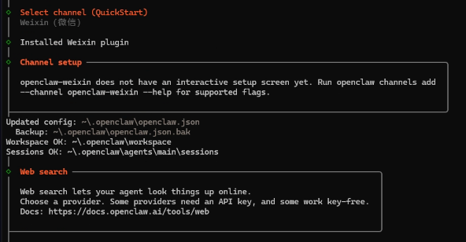
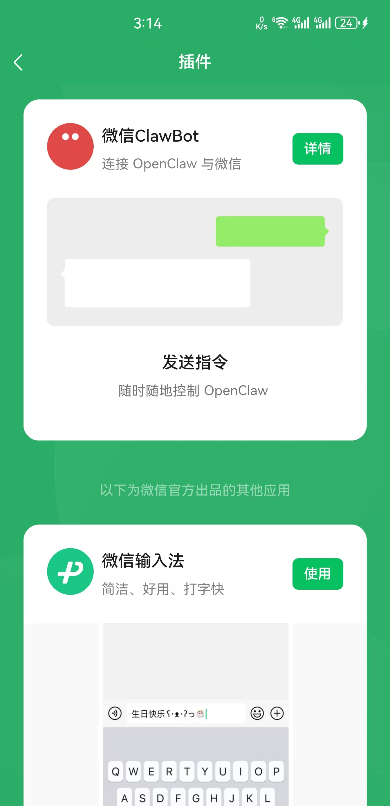
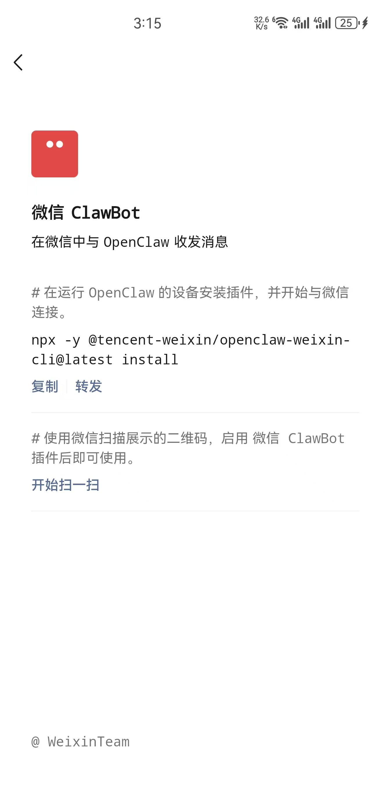
执行，或者也可以交给 OpenClaw 去做：
npx -y @tencent-weixin/openclaw-weixin-cli@latest install |
通常会返回一个授权链接，需要通过微信扫码，扫码授权之后，OpenClaw 会自动重启。
可以查看用量：
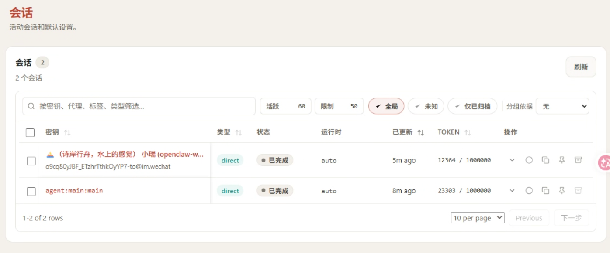
# Gateway 基础操作
https://www.runoob.com/ai-agent/openclaw-quickstart.html
Gateway 是 OpenClaw 的核心进程，所有功能都依赖它运行：
# 查看 Gateway 状态 | |
openclaw gateway status | |
# 在前台运行（适合调试） | |
openclaw gateway --port 18789 | |
# 详细日志模式 | |
openclaw gateway --port 18789 --verbose | |
# 强制占用端口并启动（解决端口冲突） | |
openclaw gateway --force | |
# 重启 Gateway | |
openclaw gateway restart | |
# 停止 Gateway | |
openclaw gateway stop | |
# 查看实时日志 | |
openclaw logs --follow |
# Control UI
Control UI 是 OpenClaw 的可视化管理界面，通过命令：
openclaw dashboard |
# 常用命令
/help # 查看帮助 | |
/status # 查看连接状态 | |
/agent <id> # 切换 Agent | |
/session <key> # 切换 Session | |
/model <provider/model> # 切换模型（如 /model anthropic/claude-sonnet-4-6） | |
/think <off|minimal|low|medium|high> # 设置思考深度 | |
/deliver <on|off> # 开启 / 关闭消息投递到 Provider | |
/new # 重置当前 Session | |
/abort # 中止当前运行 | |
/exit # 退出 TUI |
# 以下是全部命令
Available Commands | |
Tools | |
/help — Show available commands. | |
/commands — List all slash commands. (agent) | |
/tools [mode] — List available runtime tools. (agent) | |
/skill <name> [input] — Run a skill by name. (agent) | |
/learn [request] — Draft a reusable skill from recent work or named sources. (agent) | |
/status — Show current status. (agent) | |
/goal [action] [text] — Show or control the current goal. (agent) | |
/diagnostics [note] — Explain Gateway diagnostics and Codex feedback upload options. (agent) | |
/login [provider] — Pair Codex login. (agent) | |
/crestodian — Run the Crestodian setup and repair helper. (agent) | |
/tasks — List background tasks for this session. (agent) | |
/allowlist — List/add/remove allowlist entries. (agent) | |
/approve — Approve or deny exec requests. (agent) | |
/context — Explain how context is built and used. (agent) | |
/btw — Ask a side question without changing future session context. (agent) | |
/export-session [path] — Export current session to HTML file with full system prompt. | |
/export-trajectory [path] — Export a JSONL trajectory bundle for the active session. (agent) | |
/tts [action] [value] — Control text-to-speech (TTS). (agent) | |
/whoami — Show your sender id. (agent) | |
Session | |
/session [action] [value] — Manage session-level settings (for example /session idle). (agent) | |
Agents | |
/subagents [action] [target] [value] — Inspect subagent runs for this session. (agent) | |
Tools | |
/acp [action] [value] — Manage ACP sessions and runtime options. (agent) | |
/focus [target] — Bind this thread (Discord) or topic/conversation (Telegram) to a session target. (agent) | |
/unfocus — Remove the current thread (Discord) or topic/conversation (Telegram) binding. (agent) | |
Agents | |
/agents — List thread-bound agents for this session. | |
/steer <message> — Inject a message into the active run | |
Tools | |
/config [action] [path] [value] — Show or set config values. (agent) | |
/mcp [action] [path] [value] — Show or set OpenClaw MCP servers. (agent) | |
/plugins [action] [path] — List, show, enable, or disable plugins. (agent) | |
/debug [action] [path] [value] — Set runtime debug overrides. (agent) | |
/usage [mode] — Usage footer or cost summary. | |
Session | |
/stop — Stop the current run. | |
Tools | |
/restart — Restart OpenClaw. (agent) | |
/activation [mode] — Set group activation mode. (agent) | |
/send [mode] — Set send policy. (agent) | |
Session | |
/reset — Reset the current session. | |
/new — Start a new session. | |
/name [title] — Name or rename the current session. (agent) | |
/compact [instructions] — Compact the session context. | |
Model | |
/think [level] — Set thinking level. | |
/verbose [mode] — Toggle verbose mode. | |
/trace [mode] — Toggle plugin trace lines. (agent) | |
/fast [mode] — Toggle fast mode. | |
/reasoning [mode] — Toggle reasoning visibility. (agent) | |
/elevated [mode] — Toggle elevated mode. (agent) | |
/exec [host] [security] [ask] [node] — Set exec defaults for this session. (agent) | |
/model [model] — Show or set the model. | |
/models — List model providers/models. (agent) | |
/queue [mode] [debounce] [cap] [drop] — Adjust queue settings. (agent) | |
Tools | |
/bash [command] — Run host shell commands (host-only). (agent) | |
Session | |
/clear — Clear chat history | |
Agents | |
/redirect <message> — Abort and restart with a new message | |
Tools | |
/canvas — Present HTML on connected OpenClaw node canvases, navigate/eval/snapshot, and debug canvas host URLs. (agent) | |
/clawhub — Search ClawHub for skills when a requested capability is not already available; install, verify, update, publish, or sync skills. (agent) | |
/diagram_maker — Create SVG/HTML or Excalidraw diagrams for concepts, architecture, flows, and whiteboards. (agent) | |
/healthcheck — Audit/harden OpenClaw hosts: SSH, firewall, updates, exposure, backups, disk encryption, gateway security. (agent) | |
/meme_maker — Search meme templates, suggest formats, and generate local or hosted image memes. (agent) | |
/node_connect — Diagnose OpenClaw Android, iOS, or macOS node pairing, QR/setup code, route, auth, and connection failures. (agent) | |
/node_inspect_debugger — Debug Node.js with node inspect, --inspect, breakpoints, CDP, heap, and CPU profiles. (agent) | |
/notion — Notion CLI/API for pages, Markdown content, data sources, files, comments, search, Workers, and raw API calls. (agent) | |
/python_debugpy — Debug Python with pdb, breakpoint(), post-mortem inspection, and debugpy remote attach. (agent) | |
/skill_creator — Create, edit, audit, tidy, validate, or restructure AgentSkills and SKILL.md files. (agent) | |
/spike — Run throwaway prototypes to validate feasibility, compare approaches, and report a verdict. (agent) | |
/taskflow — Coordinate multi-step detached tasks as one durable TaskFlow job with owner context, state, waits, and child tasks. (agent) | |
/taskflow_inbox_triage — Example TaskFlow pattern for inbox triage, intent routing, waiting on replies, and later summaries. (agent) | |
/weather — Current weather and forecasts with web_fetch, falling back to wttr.in curl for locations, rain, temperature, travel planning. (agent) | |
/pair — Generate setup codes and approve device pairing requests. (agent) | |
/dreaming — Enable or disable memory dreaming. (agent) | |
/phone — Arm/disarm high-risk phone node commands (camera/screen/writes). (agent) | |
/voice — List/set Talk provider voices (affects iOS Talk playback). (agent) | |
Type / to open the command menu. |
# Skill
Skill 是不是就是提示词？我想说，是的，但也不全是。 可以把它理解为 “升级版、结构化的提示词”。
为了让你更清楚地理解，可以从几个维度来对比一下它们的关键区别：
Prompt 是一段自然语言的指令，每次需要时都得重新输入或复制粘贴，Prompt 是非结构化的。可以很随意，AI 自行理解意图，仅靠文字描述，AI 自主决定如何做，每次都需要在对话中完整提出。
Skill 是一个包含 SKILL.md 描述文件的文件夹，可能还包含脚本等资源，一旦创建，就可以通过技能名反复调用。Skill 高度结构化的。通过 SKILL.md 中的步骤描述，定义了清晰的工作流除了文字描述，可以绑定脚本或命令，执行确定性操作，通过命令（如 /my-skill ）或在对话中提及即可自动触发。
可以在： C:\Users\用户名\.openclaw\workspace 下看见所有的 Skill。
OpenClaw 使用技能系统来扩展功能。技能是可复用的功能模块，可以通过 ClawHub CLI 从 clawhub.com 安装。
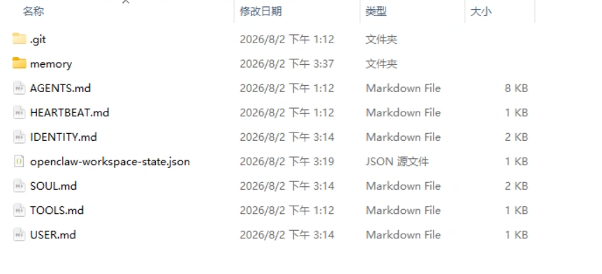
# 安装 ClawHub CLI
npm install -g clawhub |
ClawHub 常用命令，镜像：https://cn.clawhub-mirror.com
| 命令 | 说明 | 示例 |
|---|---|---|
clawhub list |
列出已安装的技能 | 查看当前工作空间的所有技能 |
clawhub update <skill> |
更新指定技能到最新版本 | clawhub update baoyu-image-gen |
clawhub update --all |
更新所有技能 | 批量更新所有已安装技能 |
clawhub update --force |
强制更新（忽略版本检查） | 解决版本冲突时使用 |
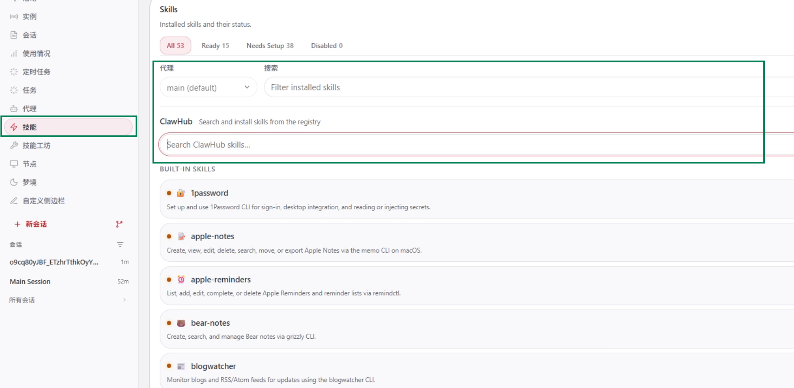
# Skill 安装示例：elite-ppt-pro
elite-ppt-pro 是一个专注于创建世界级专业演示文稿的技能，设计水准对标苹果、微软、谷歌等科技巨头的发布会风格。下面通过这个例子，展示 Skill 的安装和使用流程。
执行：
openclaw skills install @forrestneo/elite-ppt-pro |
安装 elite-ppt-pro 时不仅仅是安装他自己，他还依赖了一些其他的 Skill：
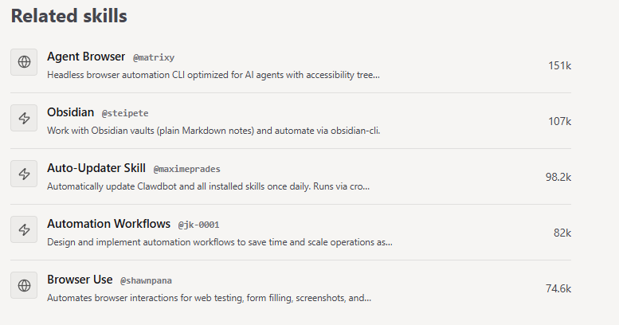
一般来说，如果不配置镜像，它这个命令通常会失败。
执行：
clawhub search "elite-ppt-pro" --registry https://cn.clawhub-mirror.com |
重点对比一下名称和版本：
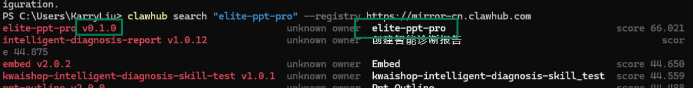
安装：
clawhub install "elite-ppt-pro" --registry https://cn.clawhub-mirror.com |
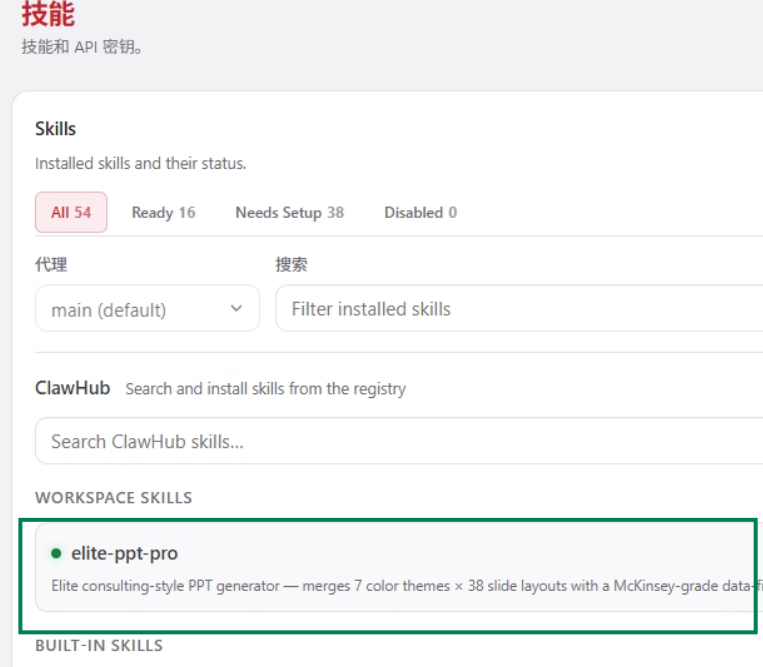
# Skill 的使用
通过 /skill-name 就可以使用了，这里让他生成一个自我介绍 ppt
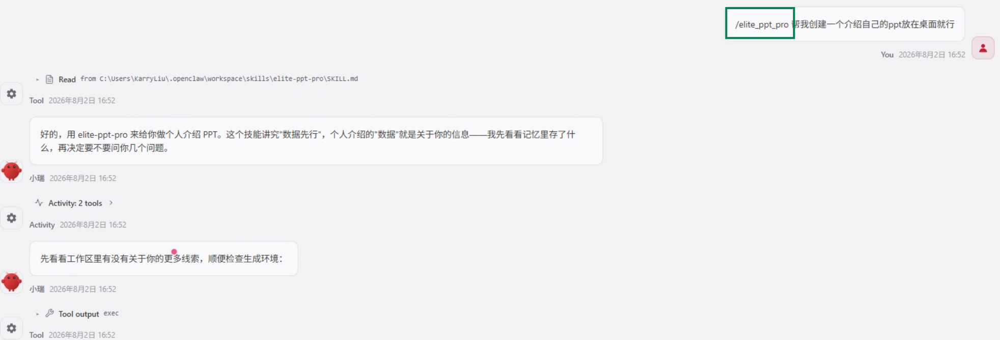
后续他会多从向你询问信息，以制作详细的 PPT。
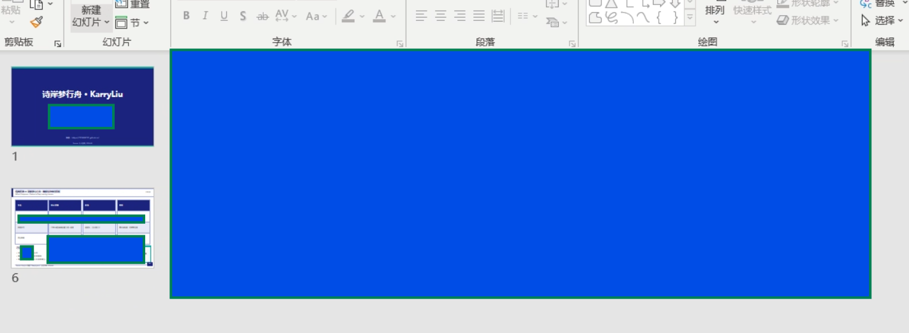
大部分信息的敏感的，所以我掩盖掉了。
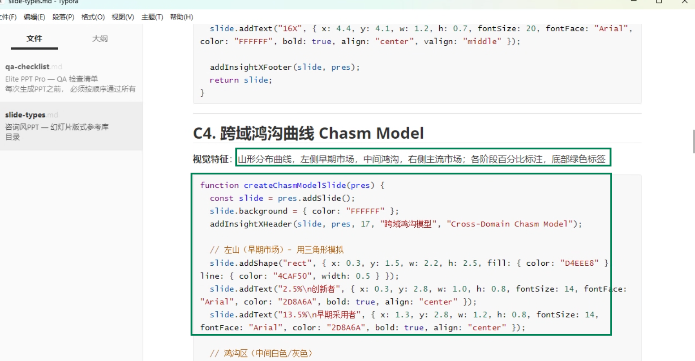
可以看见，SKILL 中不仅有提示词，还有代码，这里可以理解为脚本。
# 带你安装好玩的 SKILL
这是一个 Skill 集合，感兴趣可以看看：https://github.com/jimliu/baoyu-skills
# find-skills
帮助发现和安装技能
clawhub install find-skills --registry https://cn.clawhub-mirror.com |
# weather
天气查询和预报
clawhub install weather --registry https://cn.clawhub-mirror.com |
# awesome-ai-research-writing
论文写作绘图增强：https://github.com/Leey21/awesome-ai-research-writin
# arxiv-translator
英文论文翻译：https://github.com/Leey21/arxiv-translator
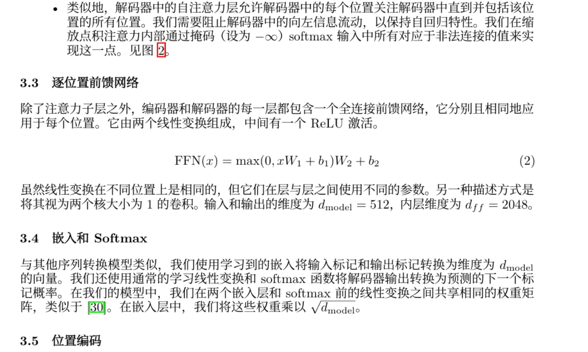
效果非常哇塞，感觉论文变简单了。
# Academic Skills for Claude Code & Codex
三个面向中国科研工作者的学术技能包，覆盖论文写作、学术 Office 文档生成与科研计算三大场景。
所有 skill 均可在 Claude Code 和 Codex 两个平台上直接使用：https://github.com/zLanqing/codex-claude-academic-skills
这个效果也很强，而且支持生成报告和评价，很实用。